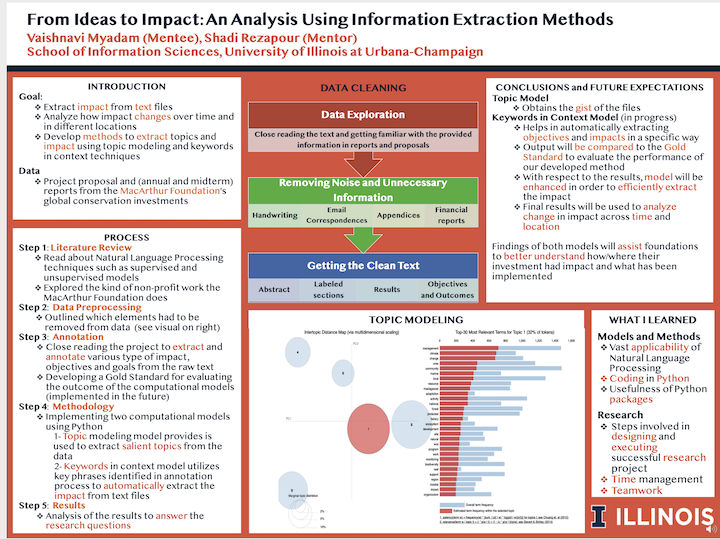

The goal of this research project was to extract impact, meaning the objectives or results of a certain project, from text and analyze how this impact changes over time and in different locations. The text used in this project comes from multiple types of data such as project proposals, midterm reports, annual reports, and final reports of the MacArthur Foundation's global conservation investments. The scanned files given by the Foundation were converted to text files using the Python PyPDF2 library.
This project consisted of four main steps: closed readings, preprocessing, data annotation, and analysis. For closed readings, I read about different Natural Language Processing techniques such as supervised and unsupervised models and about what kind of non-profit work the MacArthur Foundation does. Then, to clean the data, we outlined which non-critical elements had to be removed from data, as shown in the Data Cleaning visual. Using this clean data, I annotated these files and created a Gold Standard to be used in the future when evaluating the success of our model. This annotation involved extracting the impact and critical phrases that indicate final impact and objectives.
The Implementations Involved
The final step of analysis currently involves two methods: topic modeling and key words in context. Using Python, I implemented a topic modeling system to extract key information and topics from the files using various Python packages. These packages were also used to visualize the results of the topic model (as shown by the Topic Modeling visual). This model helps us obtain the gist of the files in an efficient manner.
Further, I developed key words in context model that utilizes the key phrases identified by annotation to extract the impact from the text files. The output of this model will be compared to the Gold Standard to measure the accuracy of the model. Using these extracted keywords, we will be able to compare the objectives and impacts discussed in the projects to analyze how impact changed or shifted throughout time and locations. This model helps us pinpoint objectives and impacts in specific ways.
 Presented at the Undergraduate Research SymposiumFuture Expectations
The findings of both of these models will help the funders and sponsors of the MacArthur Foundation gain a more detailed and comprehensive understanding of the objectives and impacts of the projects, see how their investment has been used, and what has been implemented. During this process, I learned about the vast applicability of Natural Language Processing, the usefulness of Python packages, and the steps involved in a successful research project. In the future, these models can be enhanced to view the correlation between impact and amount of money granted, comparisons across more regions, and for analysis of text for various projects.